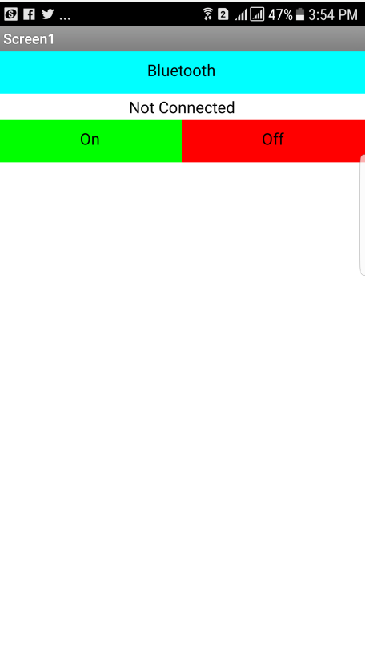
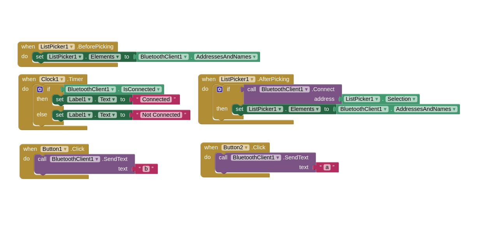
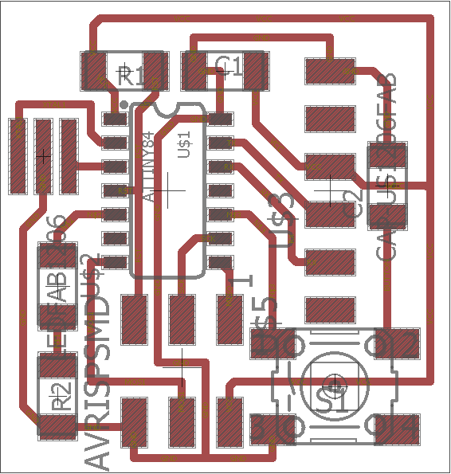

This week assignment require us to make application that interfaces at least one input or output. I made a simple android app using MIT APP Inventor 2 that sends letter 'a' if button 1 is pressed and letter 'b' if button 2 is pressed. The app communicates to my week 6 board via the HC-06 bluetooth to serial module.
At the begining I made a simple application to get used with app after learning from this nice tutorial by Magesh Jayakumar. So I made a simple anrdiod app that has 3 buttons which are:
Bluetooth: connect the bluetooth to the bluetooth to serial module that is connected to the board that has the LED.
On: when clicked sends character a to turn on the LED.
OFF: when clicked sends character b to turn on the LED.


First I tested the app on my week 6 board that has serial interface. I connected the HC-06 bluetooth module to the board using female wires as shown below:
Then I edited Neil's serial bus code and made it switch on the LED if letter 'a' is received and switch it off if letter 'b' is received. The below video shows the system working:
With this I am ready to work on the final project mobile app!
My final project FabRover has 7 different electronic boards or lets call them nodes. I put all the electronic design files of the nodes and brief explaination of each one at my final project page. In general, the anrdoid app should control the movement of the FabRover wheels as well as gets the readings from the LDR board. I have 6 wheels to control but I will start with controling one wheel and getting the readings from the LDR. So I need to desing an app that do the following:
After that, I tested the same code with my final project node board that has an servo and DC motor to verify that the serial communication system is working properly. So I edited the Andriod App to have 6 buttons to control the servo and the DC motor as the following:

I also attached this short video that shows the wheel being controlled via the mobile app:
With this I am almost done with the programming of my final project as I am only left with connecting the input device which is in my case the Light Depending Resistor (LDR) to this system and replicating it 5 more times!